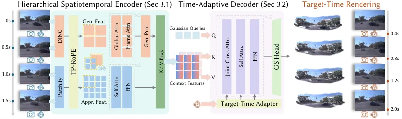
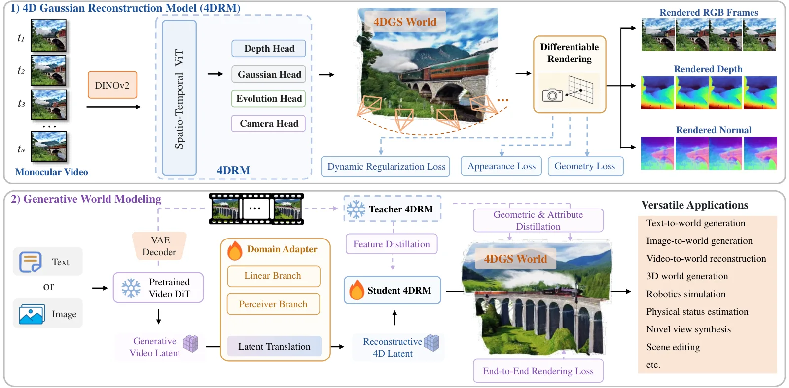
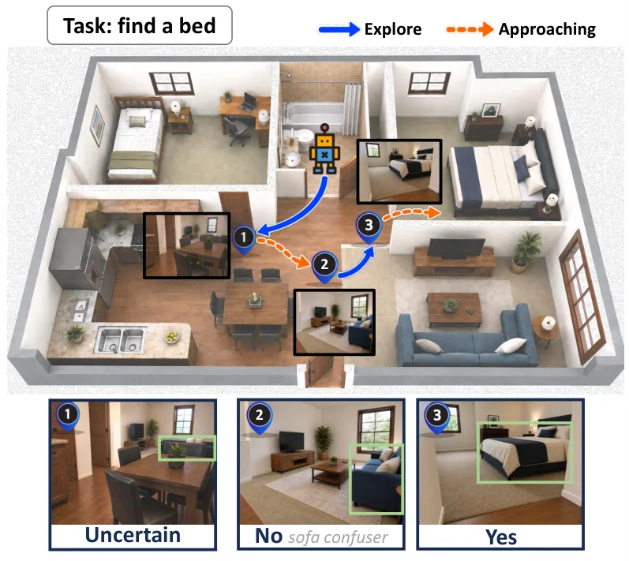
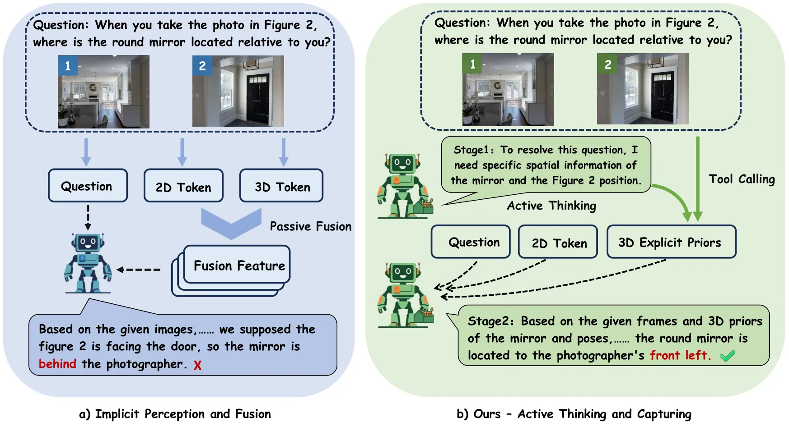

新论文 · 日期 2026-10-22 · score 15 · S层 · Geometry Foundation Models / 3D Foundation Models · cs.CV
内容级别：完整单篇海报
作者：Wei Zhang, Ying Feng, Mengtong Wu, Shiqiang Gong
评分 15/10
流式4D重建因果注意力KV cache动态掩码运动解耦相机位姿StreamVGGTStream3Rghosting
一句话工作总结：核心机制是把“动态信息进入历史”的通道——KV cache 的 key——当作可控变量：用 (1-μ)·σ 的注意力统计找动态 token，融合深度前景先验后生成掩码，再对缓存 key 软降权。DAVIS-all 平均 IoU 43.06，比最强流式基线 StreamVGGT 高 9.86 点，但离离线 VGGT4D 的 50.75 仍有明显差距；DyCheck 上 ATE…
流式 4D 重建方法普遍假设场景静态，动态物体会破坏光度一致性与极线几何，误导位姿估计，并在长序列上累积出 ghosting。Stream4D 提出免训练、可插拔的运动解耦框架：它观察到因果注意力在 KV cache 中隐含了时间运动线索，于是自适应聚合多层、跨时间窗的注意力统计，并与深度先验融合，得到动态掩码；再用软 key 掩码在缓存中抑制动态区域，从而在不重训、不改架构的前提下改善相机位姿与静态场景重建。
4D scene reconstruction requires robust handling of dynamic objects, yet existing streaming methods commonly assume static scenes, leading to pose drift and ghosting artifacts over long sequences. We introduce…

新论文 · 日期 2026-10-20 · score 15 · S层 · 3D/4D Spatial Perception · cs.CV, cs.AI
内容级别：完整单篇海报
作者：Yuanxiang Ni, Xianliang Huang, Ruihan Hou, Feng Xie
评分 15/10
连续时间WNOASE(3) 位姿-速度射线约束多对多关联双四元数动态高斯单目4D重建
一句话工作总结：它把轨迹从“运动状态”降级为“测量”，于是不同可见区间的观测可以共同约束同一段潜状态序列，中间没有观测的时段由过程模型连起来。DyCheck mPSNR 20.97（USPLAT4D 20.64）、NVIDIA PSNR 27.94（26.99），PCK-T 0.840（B-splineGS 0.832）；代价是逐序列离线优化：200 帧要 86 分钟，其中 36 分钟是 D…
单目视频重建动态 3D 场景，要从噪声大且间歇可见的观测里推断运动。长程轨迹提供几何约束，但可见区间断裂，难以汇入共享的连续运动。RayCo4D 把“视觉测量”与“潜运动状态”显式分开：每条轨迹绑定一个约束在相机射线上的参考时刻 3D query，其图像与深度观测通过多对多关联约束共享的运动节点；每个节点在稀疏支撑时刻维护 SE(3) 位姿与机体系速度，用白噪声加速度（WNOA）过程先验耦合相邻状态并定义连续时间插…
Reconstructing dynamic 3D scenes from monocular video requires inferring motion from noisy and intermittently visible observations. Long-range tracks provide valuable geometric constraints, but integrating the…

新论文 · 日期 2026-10-20 · score 15 · S层 · 3D/4D Spatial Perception · cs.CV
内容级别：完整单篇海报
作者：Qiaowei Miao, Qifeng Cheng, Yijing Guo, Yuru Xiao
评分 15/10
前馈重建高斯泼溅TP-RoPE时空编码目标时间查询WaymoRE10KVGGT-Ω
一句话工作总结：一句话：把“时间戳”变成查询维度。编码器保留几何与外观两路多尺度 token 并加上时空-投影位置编码（TP-RoPE），解码器用目标时间查询，一次前向渲染任意目标时刻。Waymo 全图 PSNR 27.69（StreetForward 27.01）、深度 AME 7.12（DGGT 7.53）；RE10K 插值 28.31（TokenGS 27.33，同为 66K 高斯）。…
从稀疏带位姿单目帧前馈重建高斯场景，需要对“视角与时间同时变化”的观测做推理。已有方法要么按观测对齐的特征直接预测高斯（高斯分配被绑到单帧），要么用紧凑潜查询聚合多帧（没有按目标时刻的时间关系组织证据）。HiQGS 提出层级时空编码器，把多分辨率几何-外观特征按图像位置、观测时间与相机位姿组织，再用以目标时间戳为条件的自适应解码器检索证据并预测该时刻的高斯场景状态。
Feed-forward Gaussian reconstruction from sparse posed monocular frames requires reasoning over observations that vary jointly in viewpoint and time. Existing methods either predict Gaussian primitives from ob…

新论文 · 日期 2026-10-21 · score 12 · S层 · 3D/4D Spatial Perception · cs.CV
内容级别：完整单篇海报
作者：Weiqi Zhang, Wenyuan Zhang, Yu-Shen Liu, Junsheng Zhou
评分 12/10
世界模型4D高斯视频潜空间域适配器蒸馏NeurIPS2026VBench生成
一句话工作总结：AEON 把“生成”和“表示”分开：生成仍发生在视频 VAE 潜空间，表示换成 4DGS，中间靠双路域适配器（Conv + Perceiver Bridge）和蒸馏衔接。4D 生成 VBench I2V 0.913、Aesthetic 0.531（Lyra 0.865/0.459）；视频→4D 在 Dycheck 14.487（NeoVerse 14.269）、DaVis 2…
显式世界模拟目前分两条路：视频生成模型外观真实但 3D 不一致，3D 生成模型几何一致但静态、不够真实。AEON 在文本/图像条件化的视频潜空间里做生成，却输出可渲染的 4D 高斯（4DGS）作为显式世界表示；它先训练一个从单目视频预测 4DGS 与相机位姿的 4D 重建模型，再用域适配器把视频模型的潜空间接到该表示上，最后用端到端渲染损失微调，从而兼顾外观真实性与几何一致性。
Current world models for explicit world simulation typically follow two distinct pathways: (1) video generative models (e.g., Sora), which simulate realistic appearances but fail to preserve 3D consistency; an…

新论文 · 日期 2026-10-21 · score 9 · A层 · Embodied Navigation / VLN / Spatial Reasoning · cs.CV, cs.RO
内容级别：半海报
作者：Pengying Wu, Mingye Jiang, Yunze Hu, Zhejia Wen
评分 9/10
目标导航三态验证主动感知证据融合扩散策略VLMHabitatObjectNav
一句话工作总结：把二分类验证器换成三态 + 主动靠近：不确定时不是硬判，而是去取更多视角。8 个 ObjectNav 系统 × 3 个数据集共 24 对全部提升（SR +3.6 平均、最高 +4.9；SPL +2.0、最高 +3.1）。VLFM 在 HM3D v2 上 SR 63.6→66.1、误停 19.4→6.4、误拒 13.8→9.3；本地 perceiver 三态准确率 86.1%，…
目标导航（ObjectNav）要求智能体在陌生环境里找到指定类别的实例并停在旁边。检测器常把相似物体（沙发当成床）高置信度地认错，一旦停下就无法纠正。CLOSER 把“停不停”当作闭环证据获取：微调开源 VLM 把候选的每个视角标为目标/非目标/不确定，用嵌入多样性门选互补视角，再用轻量网络融合逐视角概率；若仍不确定，就用扩散策略只依据跟踪掩码与深度靠近候选，直到判定明确。它在 Gibson 与 HM3D 上把成功…
Object-goal navigation (ObjectNav) requires an embodied agent to find an instance of a specified category in an unseen environment and stop near it. The agent typically relies on an object detector but must ju…

新论文 · 日期 2026-10-21 · score 7 · A层 · Embodied Navigation / VLN / Spatial Reasoning · cs.CV
内容级别：半海报
作者：Junjie Wang, Zhihao Yuan, Yunhan Tang, Sheng Xu
评分 7/10
空间推理VLM符号3D状态GRPO工具调用MindCube主动几何获取WACV2027
一句话工作总结：把几何证据从 dense feature 改成“按需获取 + 符号化文本”：100 tokens/查询（原始工具输出 205，降 51%）。Think-Capture-4B 在 MindCube-Tiny 54.4%（比 Qwen3-VL-4B 高 21.5 点、比 Think3D-4B 高 16.2 点），MMSI positional 39.1（+7.9），ViewSpa…
VLM 擅长 2D 识别，但在稀疏视角下难以维持一致的 3D 关系，遇到遮挡与视角变化就会空间幻觉。已有方法把所有帧与稠密几何一起融合，计算与上下文开销大，还鼓励模型盲信不完美的几何估计。Think-Capture 改成查询条件化：先定位任务关键物体，再按需获取它们的几何；3D 工具把零样本掩码提升到统一坐标系，符号 3D 状态抽象把物体与相机状态压成结构化文本；分层 GRPO 在“几何有用”和“几何误导”两类样本…
Vision-Language Models (VLMs) excel at 2D recognition but often fail to maintain consistent 3D relations across sparse viewpoints, leading to spatial hallucinations under occlusion and perspective changes. Exi…